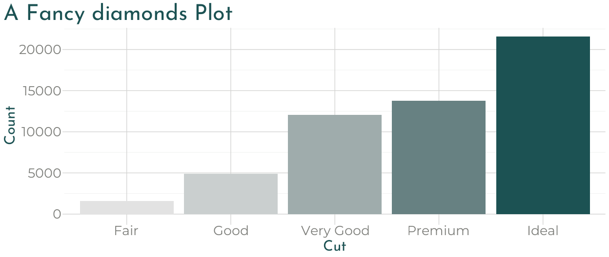

Jump to: Quick Intro, Themes, Theme Settings, Fonts, Colors, Adding Custom CSS
Quick Intro
First, add the xaringan-themer.css file to the YAML header of your xaringan slides.
Then, in a hidden chunk just after the knitr setup chunk, load xaringanthemer and try one of the theme functions.
```{r xaringan-themer, include=FALSE, warning=FALSE}
library(xaringanthemer)
style_mono_accent(
base_color = "#1c5253",
header_font_google = google_font("Josefin Sans"),
text_font_google = google_font("Montserrat", "300", "300i"),
code_font_google = google_font("Fira Mono")
)
```
Matching ggplot Themes
xaringanthemer even provides a [ggplot2] theme with theme_xaringan() that uses the colors and fonts from your slide theme. Built on the showtext package, and designed to work seamlessly with Google Fonts.
Color and fill scales are also provided for matching sequential color scales based on the primary color used in your slides. See ?scale_xaringan for more details.
More details and examples can be found in vignette("ggplot2-themes").
library(ggplot2)
ggplot(diamonds) +
aes(cut, fill = cut) +
geom_bar(show.legend = FALSE) +
labs(
x = "Cut",
y = "Count",
title = "A Fancy diamonds Plot"
) +
theme_xaringan(background_color = "#FFFFFF") +
scale_xaringan_fill_discrete()
Tab Completion
xaringanthemer is Tab friendly – use autocomplete to explore the template variables that you can adjust in each of the themes!


Themes
xaringanthemer includes a number of functions that provide themed xaringan styles. All of the styling functions start with the style_ prefix.
The goal of each style function is to quickly set up a coordinated color palette for your slides based on one or two starter colors. Styles based on one color start with style_mono_ and styles based on two colors start with style_duo_. How the starter colors are used is described in the final portion of the style function name. For example, style_mono_accent() uses a single color as an accent color.
Note that the colors used below are for demonstration only, the point of the style_ functions is for you to choose your own color palette!
If your color palette uses more than two colors, you can add additional colors with the colors argument. See the Colors section for more information.
Monotone
Use these functions to automatically create a consistent color palette for your slides, based around a single color.
style_mono_light()
A light theme based around a single color.
style_mono_light(base_color = "#23395b")

style_mono_accent()
The default xaringan theme with a single color used for color accents on select elements (headers, bold text, etc.).
style_mono_accent(base_color = "#43418A")
style_mono_accent_inverse()
An “inverted” default xaringan theme with a single color used for color accents on select elements (headers, bold text, etc.).
style_mono_accent_inverse(base_color = "#3C989E")
Duotone
These themes build from two (ideally) complementary colors.
style_duo()
A two-colored theme based on a primary and secondary color.
style_duo(primary_color = "#1F4257", secondary_color = "#F97B64")
style_duo_accent()
The default Xaringan theme with two accent colors.
style_duo_accent(primary_color = "#035AA6", secondary_color = "#03A696")
style_duo_accent_inverse()
An “inverted” default Xaringan theme with two accent colors.
style_duo_accent_inverse(primary_color = "#035AA6", secondary_color = "#03A696")
Solarized
There are also two themes based around the solarized color palette, style_solarized_light() and style_solarized_dark(). For both themes, it is advisted to change the syntax highlighting theme to solarized-light or solarized-dark (looks great paired or constrasted).


Theme Settings
The theme functions listed above are just wrappers around the central function of this package, style_xaringan(). If you want to start from the default xaringan theme and make a few modifications, start there.
All of the theme template variables are repeated in each of the theme functions (instead of relying on ...) so that you can use autocompletion to find and change the defaults for any theme function. To override the default value of any theme functions, set the appropriate argument in the theme function. A table of all template variables is included in vignette("template-variables", "xaringanthemer").
As an example, try loading xaringanthemer, type out style_duo_theme( and then press Tab to see all of the theme options.
All of the theme options are named so that you first think of the element you want to change, then the property of that element.
Here are some of the text_ theme options:
text_colortext_bold_colortext_slide_number_colortext_font_sizetext_slide_number_font_size- and more …
And here are the title slide theme options:
title_slide_text_colortitle_slide_background_colortitle_slide_background_imagetitle_slide_background_sizetitle_slide_background_position
Fonts
Default Fonts
The default heading and body fonts used in xaringanthemer are different than the xaringan default fonts. In xaringanthemer, Cabin is used for headings and Noto Sans for body text.
A Cabin in the Clearing
Pack my box with five dozen liquor jugs. Amazingly few discotheques provide jukeboxes.
These fonts are easier to read on screens and at a distance during presentations, and they support a wide variety of languages and weights. Another reason for the change is that the xaringan (remarkjs) default body font, Droid Serif, is no longer officially included in Google Fonts.
If you would like to use the fonts from the default xaringan theme, you can use the following arguments in your style function.
style_xaringan(
text_font_family = "Droid Serif",
text_font_url = "https://fonts.googleapis.com/css?family=Droid+Serif:400,700,400italic",
header_font_google = google_font("Yanone Kaffeesatz")
)Custom and Google Font Fonts
xaringanthemer makes it easy to use Google Fonts in your presentations (provided you have an internet connection during the presentation) or to fully specify your font files.
To use Google Fonts, set the <type>_font_google theme arguments – text_font_google, header_font_google, code_font_google — using the google_font() helper. The help documentation in ?google_font provides more info.
style_mono_light(
header_font_google = google_font("Josefin Slab", "600"),
text_font_google = google_font("Work Sans", "300", "300i"),
code_font_google = google_font("IBM Plex Mono")
)If you set an <type>_font_google theme arguments, then <type>_font_family, <type>_font_weight and <type>_font_url are overwritten – where <type> is one of header, text, or code.
To use a font hosted outside of Google fonts, you need to provide both <type>_font_family and <type>_font_url. For example, suppose you want to use a code font with ligatures for your code chunks, such as Fira Code, which would be declared with code_font_family. The browser usage section of the Fira Code README provides a CSS URL to be used with an @import statement that you can use with the code_font_url argument.
style_solarized_dark(
code_font_family = "Fira Code",
code_font_url = "https://cdn.jsdelivr.net/gh/tonsky/FiraCode@2/distr/fira_code.css"
)Remember that you need to supply either <type>_google_font using the google_font() helper or both <type>_font_family and <type>_font_url.
Using Additional Fonts
If you want to use additional fonts for use in custom CSS definitions, use the extra_fonts argument to pass a list of URLs or google_font()s. Notice that you will need to add custom CSS (for example, via extra_css) to use the fonts imported in extra_fonts.
style_mono_light(
extra_fonts = list(
google_font("Sofia"),
# Young Serif by uplaod.fr
"https://cdn.jsdelivr.net/gh/uplaod/YoungSerif/fonts/webfonts/fontface.css",
),
extra_css = list(
".title-slide h2" = list("font-family" = "Sofia"),
blockquote = list("font-family" = "youngserifregular")
)
)Colors
When designing your xaringan theme, you may have additional colors in your desired color palette beyond those used in the accent colors of the mono and duotone styles.
The style*() functions in xaringanthemer include a colors argument that lets you quickly define additional colors to use in your slides. This argument takes a vector of named colors
colors = c(
red = "#f34213",
purple = "#3e2f5b",
orange = "#ff8811",
green = "#136f63",
white = "#FFFFFF"
)and creates CSS classes from the color name that set the text color — e.g. .red — or that set the background color — e.g. .bg-red. If you use custom CSS in your slides, the color name is also stored in a CSS variable — e.g. var(--red).
So slide text like this
will be rendered in HTML as
This simple demo shows the colors in action.
Note that the color names in colors need to be valid CSS names, so "purple-light" will work, but "purple light" will not.
Adding Custom CSS
You can also add custom CSS classes using the extra_css argument in the theme functions. This argument takes a named list of CSS definitions each containing a named list of CSS property-value pairs.
extra_css <- list(
".small" = list("font-size" = "90%"),
".full-width" = list(
display = "flex",
width = "100%",
flex = "1 1 auto"
)
)If you would rather keep your additional css definitions in a separate file, you can call style_extra_css() separately. Just be sure to include your new CSS file in the list of applied files in your YAML header.
style_extra_css(css = extra_css, outfile = "custom.css")/* Extra CSS */
.small {
font-size: 90%;
}
.full-width {
display: flex;
width: 100%;
flex: 1 1 auto;
}This is most helpful when wanting to define helper classes to work with the remark.js .class[] syntax. Using the above example, we could add slide text .small[in smaller font size].
xaringanthemer was built by Garrick Aden-Buie (@grrrck).
Big thank you to Yihui Xie, especially for xaringan. Also thanks to Ole Petter Bang for remark.js.
Feel free to file an issue if you find a bug or have a theme suggestion – or better yet, submit a pull request!